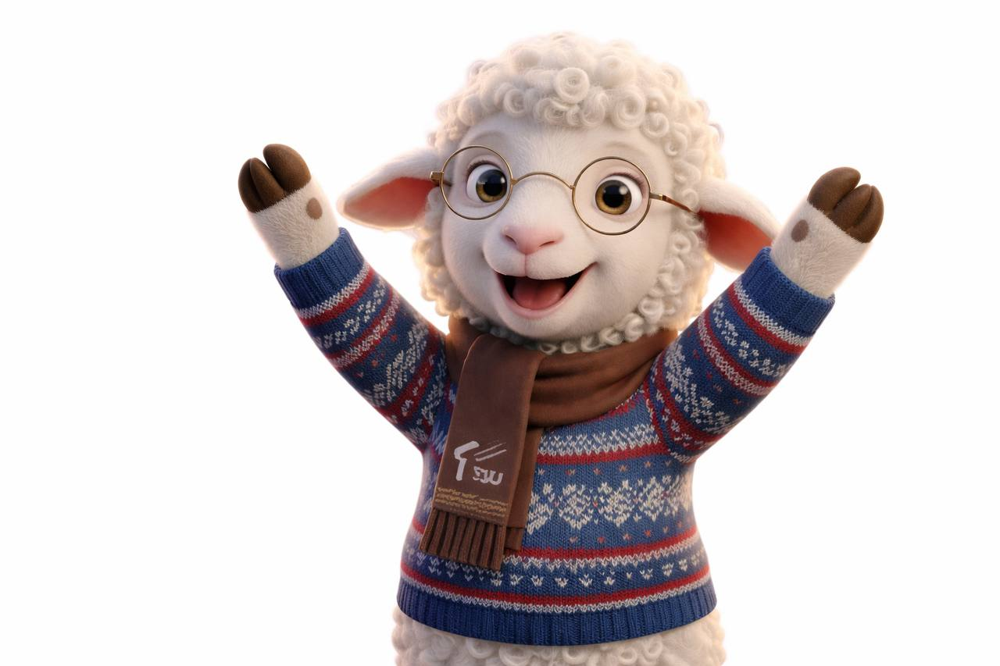
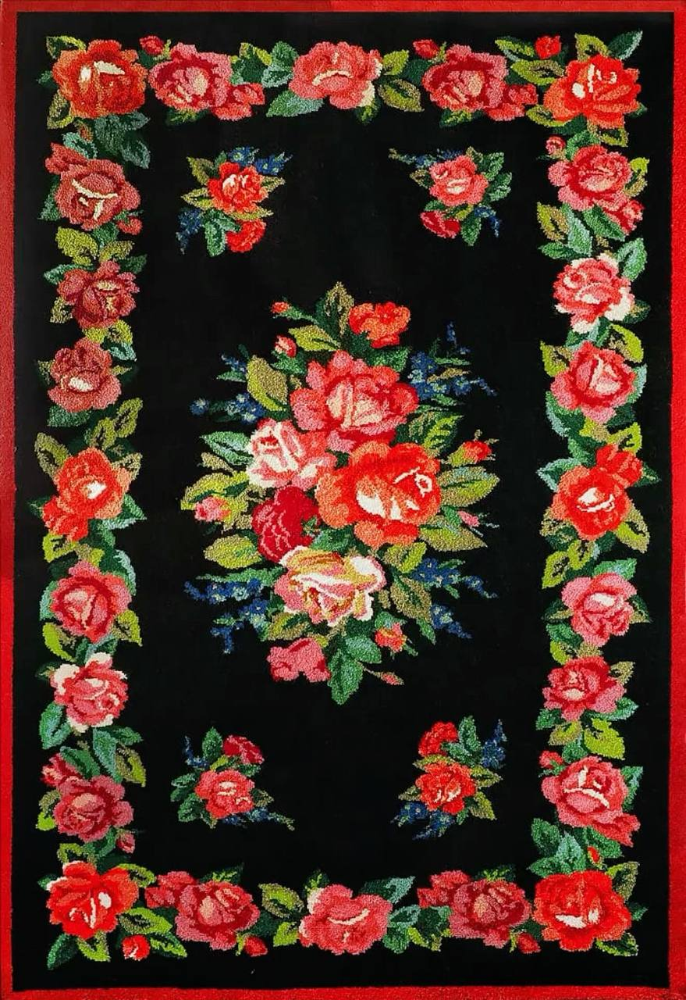
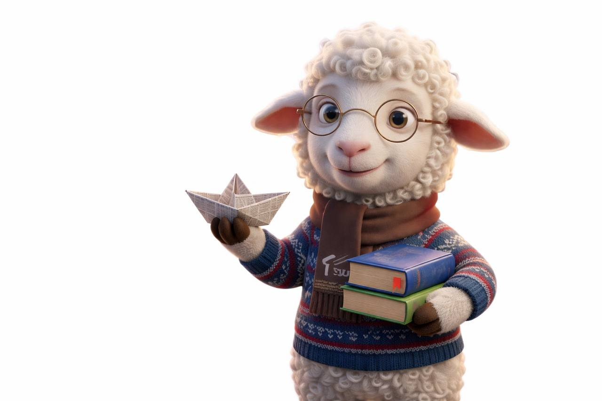
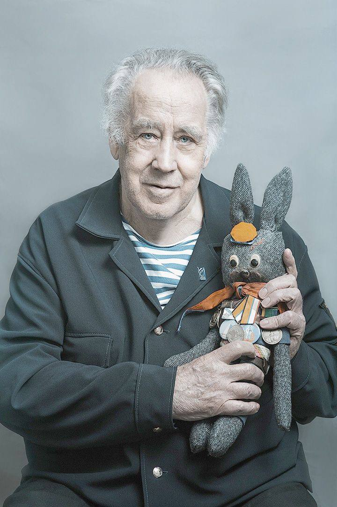
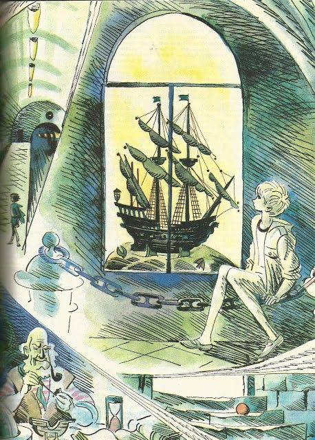
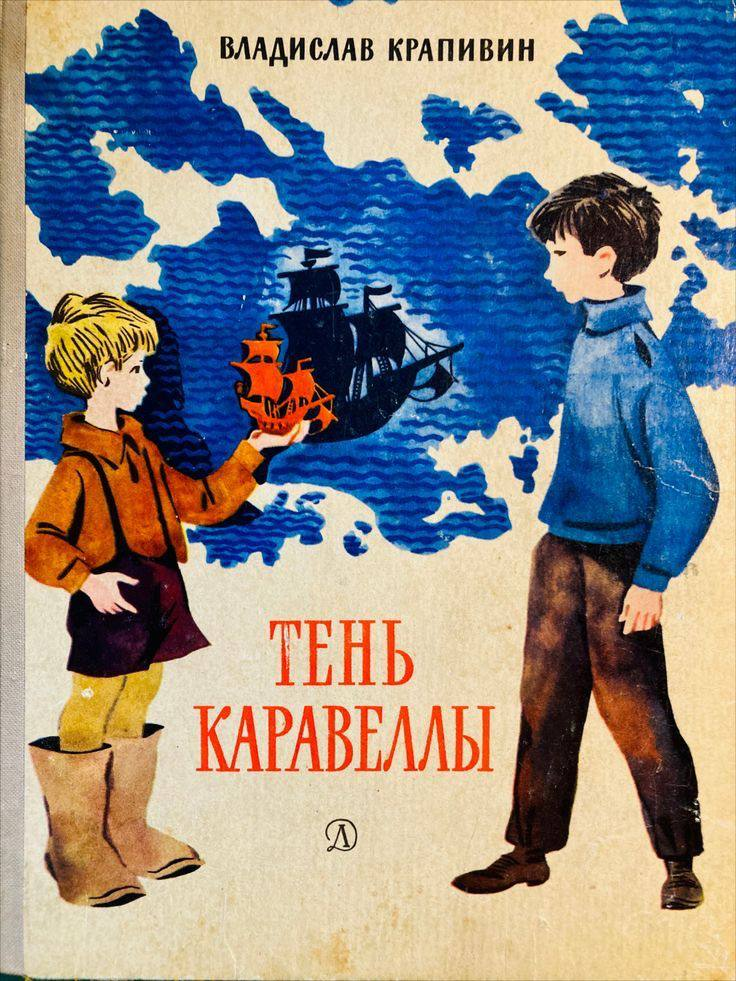

Махровый ковер
Как сибирское ремесло согревало путешественников на тракте и завоевало признание искушенных парижан.
Читать историюМаршрут по символам города
Вместе с нашим пушистым хранителем Махриком мы расшифруем для тебя смыслы города. Ты узнаешь, почему сибирские ковры покорили Париж, где искать настоящую нефть в историческом центре и как сибирское барокко стало круче любого современного арта!
Познакомиться с Махриком
Знакомство с гидом
Воплощение тюменского ковра, хранитель тепла и друг каждого студента.
Я родился на старинной ферме под Тюменью, где из поколения в поколение выращивали овечек с самой мягкой шерстью для местных мануфактур. Мой прадедушка очень гордился тем, что его шерсть попала на ковер, который в 1900 году отправился на Всемирную выставку в Париж и взял там Гран-при!
Сам я всегда был слишком любознательным для обычного барашка. Вместо того чтобы просто щипать траву, я часами слушал истории старых мастеров о сибирском барокко, уникальной тюменской резьбе и о том, как наш город стал «Вратами Сибири».
Когда я подрос, то понял: моё предназначение — не просто согревать, а делиться знаниями о родном крае. Поэтому я перебрался в Тюмень и поступил в ТюмГУ, чтобы помогать таким же новичкам, как я сам, быстрее адаптироваться и почувствовать себя здесь как дома.
Манифест проекта
Тюмень — это не только учебные пары, зачеты в общежитиях и прогулки по набережной. У нашего города есть глубокий, сильный характер, который не всегда заметен с первого взгляда.
Черное золото, купеческие династии, культовые книги Владислава Крапивина, согревающие горячие источники, сибирское барокко и махровые ковры — всё это переплетается в единый узор. Именно эти смыслы делают Тюмень особенной. Давай разберем их вместе.
Интерактивная витрина смыслов
Как сибирское ремесло согревало путешественников на тракте и завоевало признание искушенных парижан.
Читать историюИстория великих открытий XX века: как Тюмень превратилась из «столицы деревень» в главный нефтегазовый центр страны.
Узнать большеО сибирских меценатах, которые строили театры, школы и больницы, закладывая фундамент будущего города.
Узнать большеСекреты деревянного зодчества и сибирского барокко. Читаем символы на фасадах старинных домов.
Узнать большеПодземные термальные моря Тюмени — геологический феномен, ставший главной визитной карточкой региона.
Узнать большеСимволы детства, зовущие барабаны, старая Тюмень и летящие парусники в творчестве легендарного писателя.
Читать историюИстория великих открытий XX века: как Тюмень превратилась из «столицы деревень» в главный нефтегазовый центр страны.
О сибирских меценатах, которые строили театры, школы и больницы, закладывая фундамент будущего города.
Секреты деревянного зодчества и сибирского барокко. Читаем символы на фасадах старинных домов.
Подземные термальные моря Тюмени — геологический феномен, ставший главной визитной карточкой региона.
Вступление от Махрика
Когда-то такие ковры были почти в каждом доме.
Их делали вручную, долго и очень аккуратно.
Со временем тюменский ковёр стал не просто предметом интерьера, а частью культурного образа города.
История ковра
Тюменский махровый ковер - народный художественный промысел региона. Ковер объединяет в себе традицию, культуру и историю Сибири.
Тюменский махровый ковер получил наивысшую награду на Всемирной выставке в Париже в 1900 году. Великие художники восхищались традиционным промыслом Сибири и увековечивали его в своих картинах. Так, на картине В. И. Сурикова «Взятие снежного городка» одно из центральных мест занимает наш тюменский ковер.

Ткань, цветы и орнаментыФакт-блок
тюменский махровый ковер имеет свой уникальный стиль и технологию изготовления
Черный фон - плодородная сибирская земля
Яркие цветы - символ процветания этой земли
ковры создаются вручную
ковровому промыслу более 300 лет
Карта смыслов
Место, где можно увидеть тюменские ковры и узнать историю местного ремесла.
традиционные тюменские узоры встречаются и на фасадах зданий
Здесь можно найти современные версии тюменских ковров и предметы с местной символикой.
Раздел
Истории о дружбе, свободе и детстве, на которых выросло несколько поколений.
Начать путешествие
Вступление от Махрика
Владислав Крапивин — писатель, журналист и педагог, чьи книги стали частью детства для тысяч людей.
В его историях много свободы, приключений, дружбы и ощущения, что впереди ещё целая жизнь.
Для Тюмени Крапивин — это не просто автор книг, а важная часть культурной атмосферы города.
Почему это важно для Тюмени
Крапивин — это не просто «писатель из школьной программы».
Это часть атмосферы города и воспоминаний многих людей.
Некоторые города запоминаются зданиями. Тюмень — ещё и историями
Интерактивная витрина смыслов

книги Крапивина известны по всей России

многие произведения связаны с темой свободы

книги Крапивина известны по всей России
Карта смыслов
Место, посвящённое творчеству писателя и литературной культуре города.
Место, которое идеально подходит под атмосферу книг Крапивина.
Фестивали, выставки и события, посвящённые детской литературе и творчеству писателя.
Вывод
Черное золото, купеческие династии, культовые книги Владислава Крапивина, согревающие горячие источники, сибирское барокко и махровые ковры — всё это переплетается в единый узор.
Вернуться наверх
Финальный комментарий Махрика
Да, я ведь тоже ковёр!